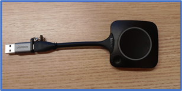

Instruções de uso do Clickshare
01. Sobre a mesa nas salas de reuniões da Sede, há um dispositivo chamado Clickshare que é utilizado para compartilhar os recursos do laptop como imagem da tela, microfone e a câmera na TV da Sala.

02. Conectar o Clickshare em qualquer porta USB do Laptop que utilizará os recursos da TV. Após conectá-lo, uma luz banca indicativa é exibida indicando que o equipamento está ligado.
03. Automaticamente um plugin controlador do Clickshare é instalado no Windows. Ele pode ser encontrado próximo ao relógio no Windows e tem o formato de um círculo. Clique nesse ícone.
04. Para exibir somente a tela de um determinado aplicativo já aberto no Laptop na TV, por exemplo, o Excel, o Power Point, ArcGIS, AutoCAD, etc.
Utilizar o primeiro ícone conforme indicado na seta laranja (1°) e depois clique no botão circular (2°) ou no botão físico no equipamento.
05. Para exibir todas as telas do Laptop na TV.
Utilize o primeiro ícone conforme indicado na seta laranja (1°) e depois clique no botão circular (2°) ou no botão físico no equipamento.
06. Quando o Clickshare estiver funcionando transmitindo a imagem para a TV, a luz indicativa fica vermelha.
07. A imagem do notebook começa a aparecer na TV.
Caso haja algum problema com a saída de som, o microfone ou webcam no Microsoft Teams, será necessário rever as configurações e fazer alteração da origem.
Dentro do Microsoft Teams, clique nos ... (1°) e depois clique em Configurações (2°).
>>> Áudio
Em Dispositivos de áudio deixar com a opção Room Speakerphone.
Em Viva-voz deixar com a opção Telefone viva voz com cancelamento de ruídos.
Em Microfone deixar com a opção Telefone viva voz com cancelamento de ruídos.
>>> Vídeo
Em Câmera deixar com a opção Room Camera.